AI学習ポータル 操作マニュアル
講座の受講、講座の作成・公開、管理者向けの機能について、画面ごとの使い方を説明します。 左の目次から読みたい項目を選んでください。
このサービスについて
AI学習ポータルは、AIやデータ分析、統計に関する知識・技術を基礎から実践レベルまで学び、その学びを共有するためのサービスです。 講座は複数の単元でできていて、単元の中で概念の説明を読み、例題のコードを動かし、演習を解きながら学びます。
- 環境構築は不要です。Python のコードはブラウザの中で実行されます(Google Colab に近い操作感です)。
- 単元の演習をすべて正解すると単元が完了になり、全単元を完了すると小テストを受けられます。小テストで満点を取ると講座の修了です。
- 講座は、管理者だけでなくメンバーの誰でも作成・公開できます。AI に下書きを作らせることもできます。
利用者の区分とできること
利用者は「メンバー」と「管理者」の2つに分かれます。講座の受講・作成は、どちらも同じ操作で行えます。
| 機能 | メンバー | 管理者 |
|---|---|---|
| 講座の受講・小テスト・マイ学習 | ○ | ○ |
| 講座の作成・編集・公開・削除 | ○(自分が作成した講座のみ) | ○(すべての講座) |
ログイン・ログアウト
- ポータルの URL をブラウザで開くと、ログイン画面が表示されます。
- 管理者から伝えられたログイン名とパスワードを入力し、ログインを押します。
- ログインするとホームが表示されます。
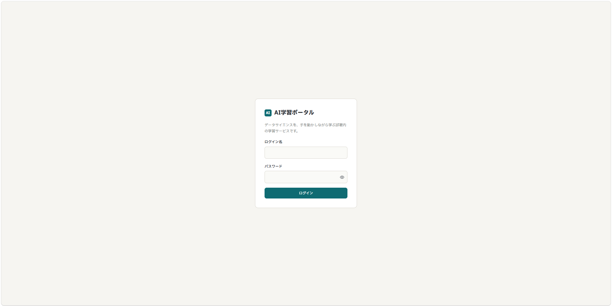
ログアウトするときは、画面右上の ログアウト を押します。
画面の構成
すべての画面の上部にヘッダーがあり、次のメニューから各画面に移動できます。
| メニュー | 内容 |
|---|---|
| ホーム | 続きから学習・受講中の講座・学習ロードマップ・新着講座 |
| 講座カタログ | 公開中の講座の一覧。絞り込み・検索ができます |
| マイ学習 | 自分の受講状況・修了した講座・小テストの受験履歴 |
| 講座管理(管理者は 管理) | 講座の作成・編集・公開 |
右上には、マニュアル(この操作マニュアルを別タブで開きます)、ログイン中の表示名、 ログアウト が表示されます。
受講受講の流れ
- 単元はどの順番で開いても構いませんが、基本は 1 から順に進めることをおすすめします。
- 小テストは何度でも受け直せます。満点を取った時点で修了になります。
ホーム
ログイン後に最初に表示される画面です。
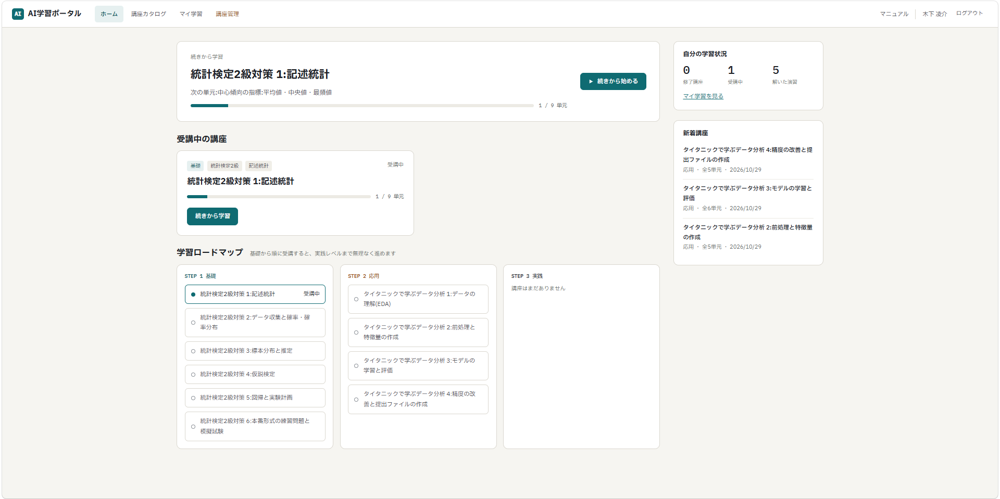
- 続きから学習:最後に学習していた講座と次の単元が表示されます。続きから始めるで、その単元を開きます。
- 受講中の講座:受講を始めた講座の進捗です。
- 学習ロードマップ:講座を「基礎 → 応用 → 実践」のレベル順に並べています。基礎から順に受講すると無理なく進めます。
- 自分の学習状況:修了講座・受講中・解いた演習の数です。
- 新着講座:最近公開された講座です。
講座カタログ
公開中の講座の一覧です。講座のカードを押すと講座詳細が開きます。
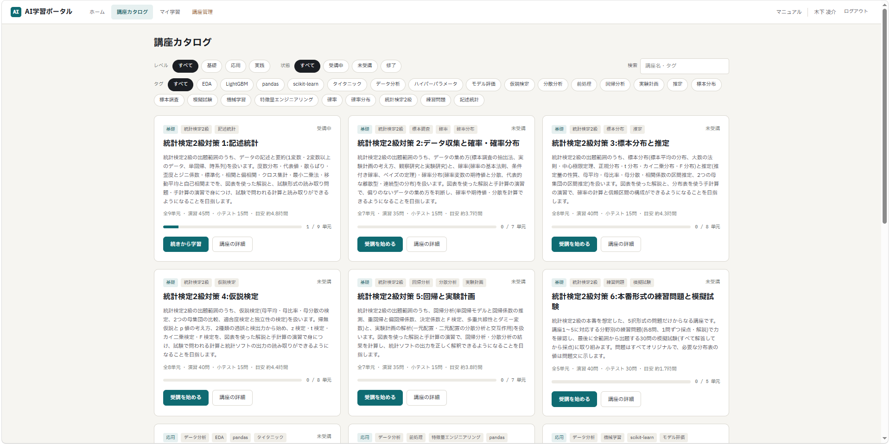
- レベル(基礎・応用・実践)、状態(受講中・未受講・修了)、タグで絞り込めます。
- 検索欄に入力すると、講座名・概要・タグで絞り込めます。
講座詳細
講座の概要と単元の一覧、自分の進捗を確認する画面です。
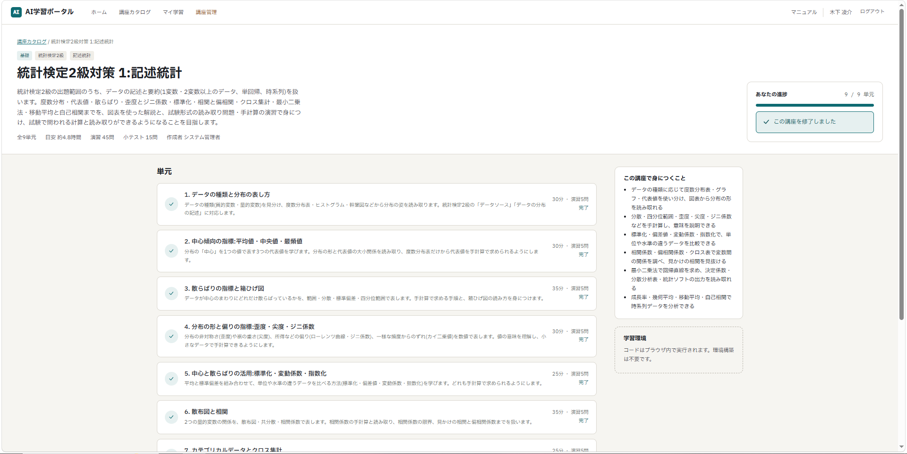
- 右上のあなたの進捗のボタン(受講を始める / 続きから)で、次に学ぶ単元を開きます。
- 単元の一覧では、完了した単元にチェックが付き、次に学ぶ単元は「次に学習」と表示されます。どの単元も押して開けます。
- 一覧の最後が小テストです。全単元を完了するまでは「あと ○ 単元」と表示され、受験できません。
- 先に受講をおすすめする講座は目安です。修了していなくても受講できます。
- 学習環境に、講座で使うライブラリとデータファイルが表示されます。
単元で学ぶ
単元の画面は、説明・例題コード・演習のセルを上から順に並べたノートブック形式です。上から読み進めてください。
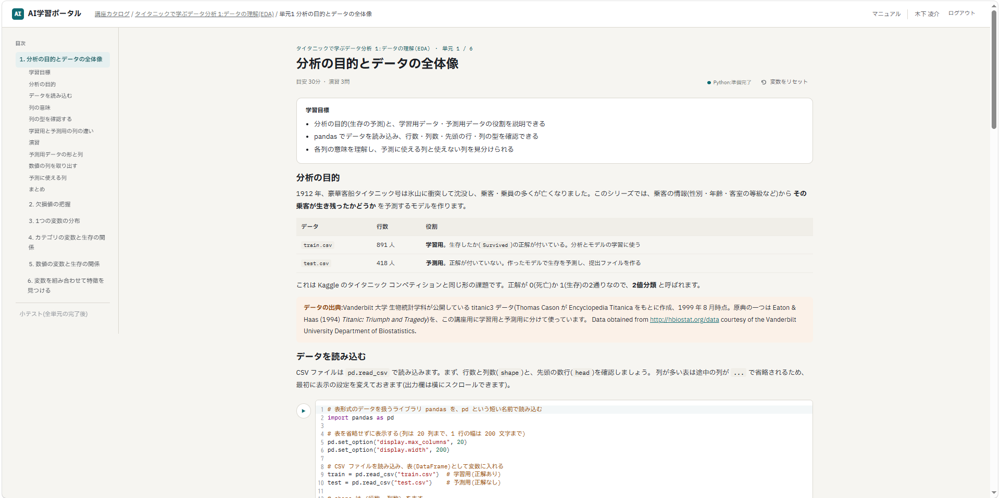
- 左の目次:講座のすべての単元と、開いている単元の見出し・演習へのリンクです。完了した単元にはチェックが付きます。
- 学習目標:この単元で身につけることです。
- Python の状態(右上):「未起動」「準備中」「準備完了」「実行中」などを表示します。初めてコードを実行するときに実行環境を準備するため、数十秒かかることがあります。
- 画面の下の 前の単元 / 次の単元 で単元を移動できます。
コードを実行する
- コードセルの左にある実行ボタン(▶)を押すか、セルの中で Shift + Enter を押します。
- セルの下に実行結果(print の内容・セル最後の式の値・グラフ・エラー)が表示されます。
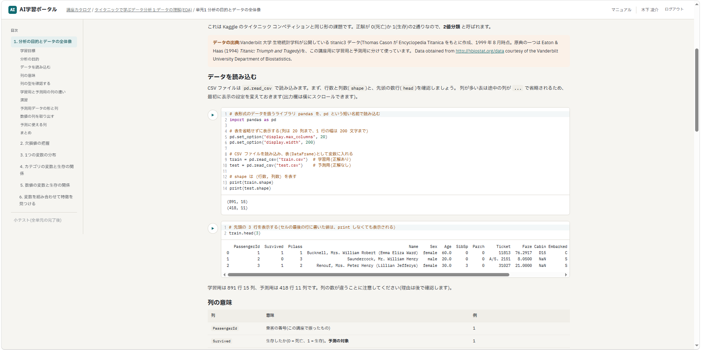
- 例題のコードは自由に書き換えて試せます(書き換えた内容は保存されません。再読み込みすると元に戻ります)。
- 同じ単元のセルは変数を共有します。例題は上から順に実行してください。前のセルを実行していないと、変数が見つからないエラーになります。
- 実行中は実行ボタンが停止ボタンに変わります。終わらない処理は停止ボタンで止められます(120 秒で自動的に止まります)。
- 右上の 変数をリセット で、この単元で作った変数をすべて消せます。動きがおかしくなったときにお試しください。
- コードでファイルを作成すると(例:
df.to_csv("submission.csv"))、出力の下に「作成したファイル」が表示され、ダウンロードで保存できます。
演習に回答する
演習には次の形式があります。演習の見出しに形式と採点方法が表示されます。
| 形式 | 回答のしかた |
|---|---|
| コード |
初期コードの空欄(____)などを埋めて、提出して採点を押します。コードを実行し、その結果で採点します。
採点方法は「出力一致」(出力が想定どおりか)と「テストコード」(テストに合格するか)の2つです。
|
| 選択式 | 選択肢から1つ選び、回答して採点を押します。 |
| 数値入力 | 数値を入力し、回答して採点を押します。全角数字やカンマ区切りでも構いません。許容誤差の範囲内なら正解です。 |
| 表形式の選択 | 表の行ごとに、列の選択肢から1つずつ選び、回答して採点を押します。すべての行が正しければ正解です。 |
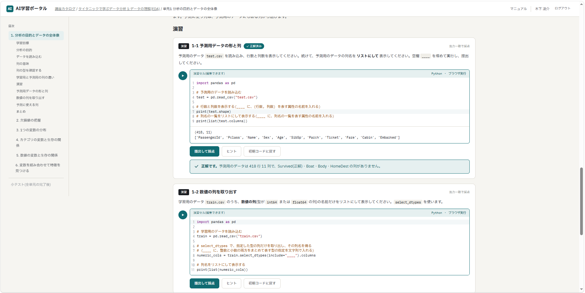
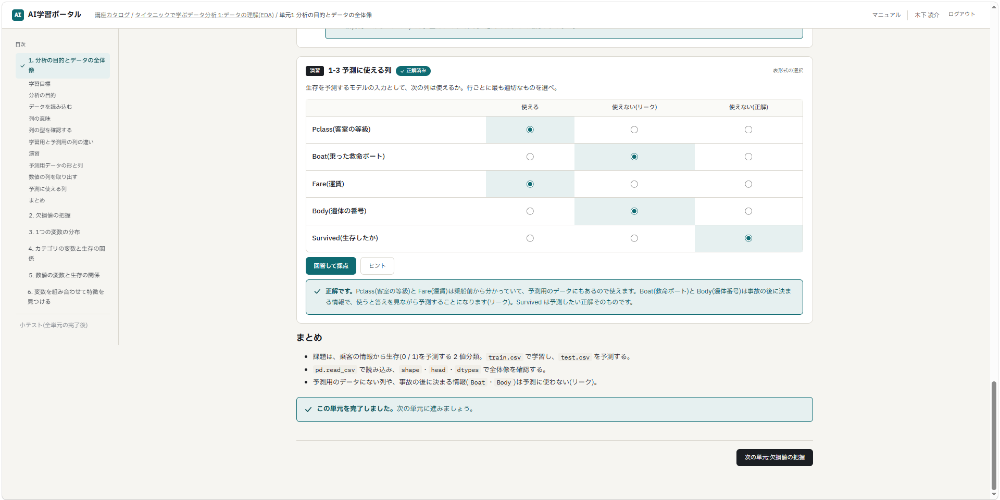
- 分からないときは ヒント を押すと、ヒントが表示されます。
- コードの演習で書き換えすぎたときは、初期コードに戻すで最初の状態に戻せます。
- 正解すると解説が表示され、演習に「正解済み」の印が付きます。不正解でも何度でも回答し直せます。
- 単元のすべての演習に正解すると、その単元は完了になります。
小テストを受ける
講座の全単元を完了すると、講座詳細や単元の目次から小テストを開けます。小テストは 10 問程度で、満点で講座の修了です。 制限時間はなく、何度でも受け直せます。
- すべての問題に回答します(コードの問題は、実行して結果を確かめておきます)。
- 画面下の 採点する を押します。コードの問題は採点時に自動で実行されます。
- 問題ごとに正解・不正解が表示されます。正解の問題には解説が、不正解の問題には復習する単元へのリンク(「復習:単元○ ○○ ↗」)が表示されます。 リンクを押すと単元が別タブで開くので、採点結果を残したまま単元を見直せます。
- 満点でなければ、小テストのタブに戻って回答を直し、もう一度採点する を押します。最初から受け直す で回答を消してやり直すこともできます。
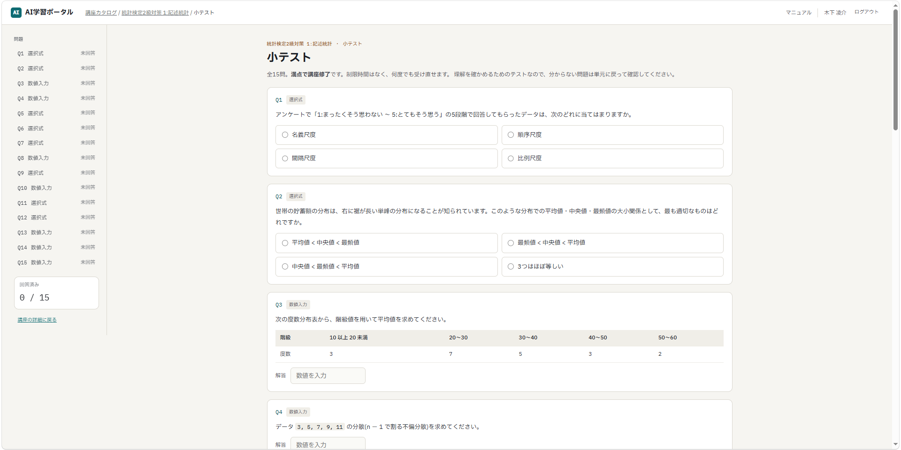
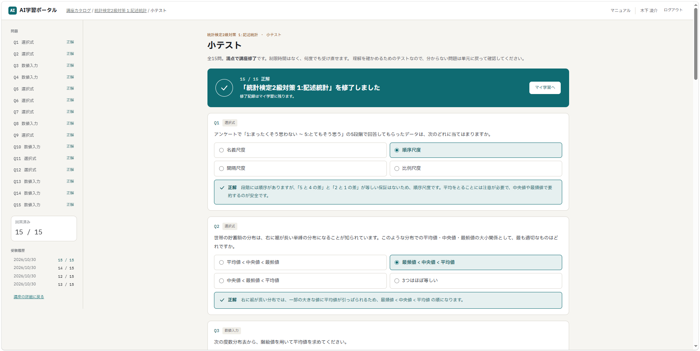
マイ学習
自分の学習の記録をまとめて確認する画面です。
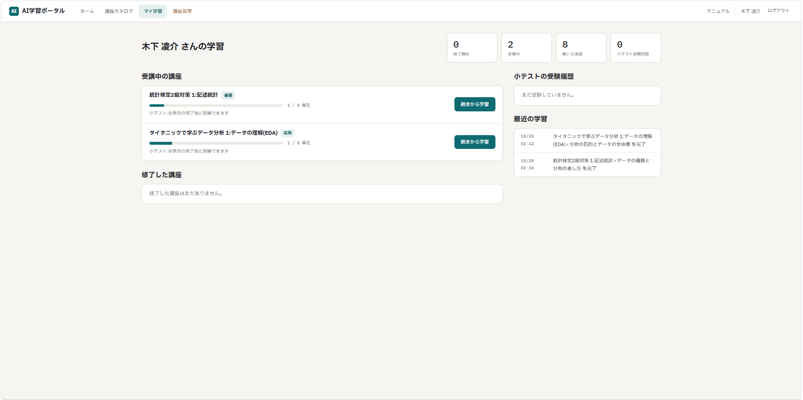
- 受講中の講座:進捗と小テストの最高得点。ボタンから続きを始められます。
- 修了した講座:修了日と小テストの受験回数。
- 小テストの受験履歴・最近の学習:これまでの受験結果と学習の記録です。
講座作成作成から公開までの流れ
講座はメンバーの誰でも作成できます。作成した講座は「下書き」になり、公開前チェックを満たすと、承認なしで公開できます。
講座管理
ヘッダーの 講座管理で開きます。自分が作成した講座が表示されます。
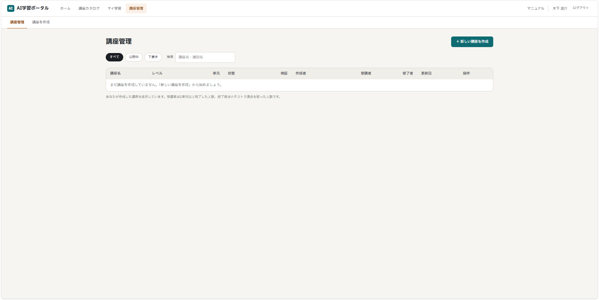
- 状態:「公開中」か「下書き」です。上のボタンで絞り込めます。
- 検証:検証済みの問題数 / 全問題数です。すべて検証済みになると緑色で表示されます。
- 受講者は1単元以上完了した人数、修了者は小テストで満点を取った人数です。
- 操作:編集で講座エディタ、公開前チェックで公開前チェックの画面を開きます。
AI で作成する
題材を入力すると、AI が講座の構成案を作り、その構成から説明・例題・演習・小テストの下書きを作ります。
- ＋ 新しい講座を作成(または管理メニューの 講座を作成)を押し、作成方法で 題材から AI で作成 を選びます。
-
講座のタイプを選びます。
- 概念理解型(コードなし):図表と文章で説明し、演習は選択式・数値入力・表形式で出題します(例:統計検定対策)。
- 実践型(コーディング中心):例題コードを実行して結果を読み取り、コードを書く演習で学びます(例:データ分析の実践)。
- 講座タイトル(仮)・講座の目的・題材・単元数の目安・レベル・識別名などを入力します。データを使う講座は、データファイル(CSV)も選びます。AI がデータの列・型を読み取ってコードを書きます。
- AI で構成案を作成 を押します(10 秒ほどかかります)。
- 表示された構成案(講座タイトル・概要・単元ごとのタイトル・概要・学習目標・演習数・小テストの問題数)を確認し、必要に応じて編集します。単元の追加・削除・並べ替えもできます。
- この構成で下書きを作成 を押すと、下書きの作成が始まり、進捗の画面に移ります。
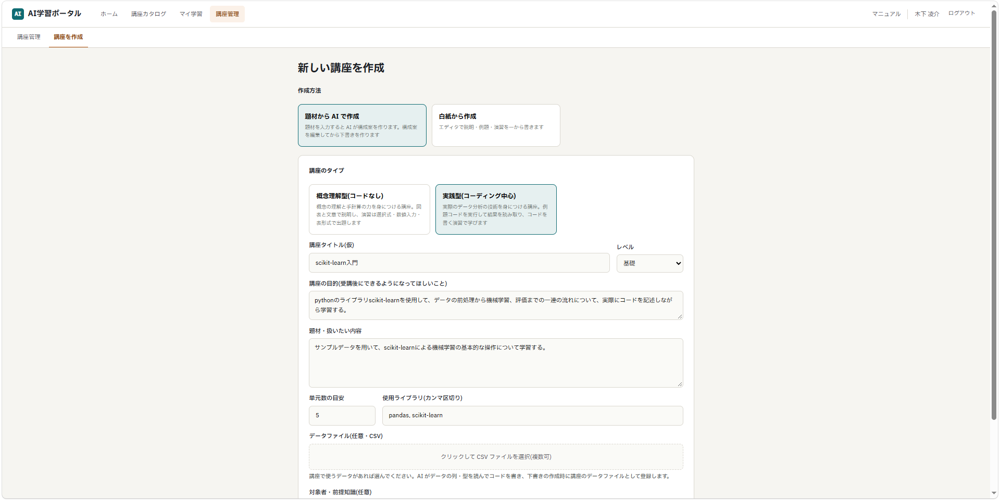
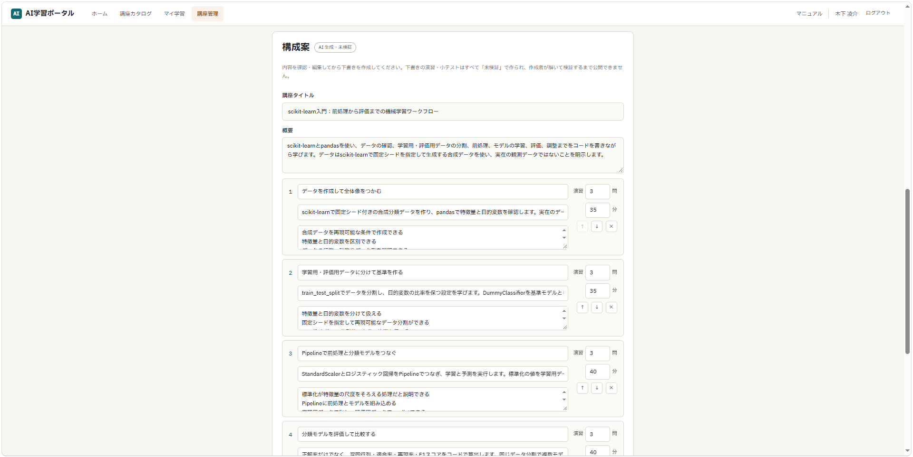
下書きの作成の進捗
AI は単元ごとに説明・例題・演習を作り、コードを実際に実行して数値や正解を確かめながら直します。 1単元に 2〜4 分ほど、講座全体で 10〜20 分ほどかかります。このページを閉じても作成は続きます。
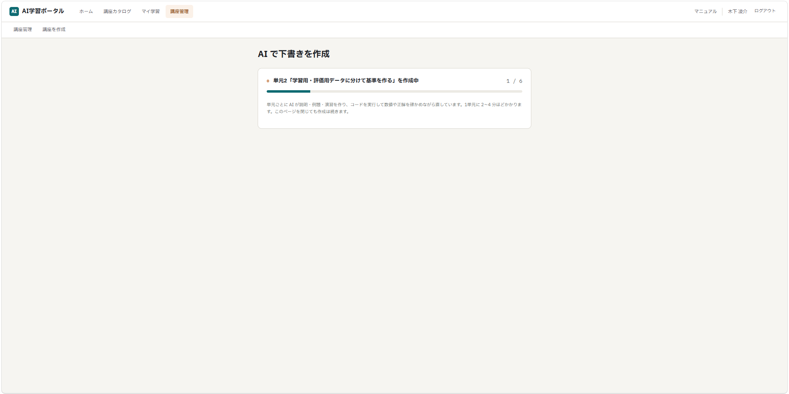
- 完了したら 講座エディタで確認する を押して、内容を確認・検証します。
- 「要確認」と表示された項目は、AI が直しきれなかった点です。講座エディタで内容を確認してください。
- 途中で失敗・中断したときは 続きから再開 を押すと、まだできていない単元と小テストだけを作ります。
白紙から作成する
- 作成方法で 白紙から作成 を選びます。
- 講座タイトル・識別名(URL に使う英小文字・数字・ハイフン)・レベル・概要を入力します。
- 下書きを作成してエディタへ を押すと、講座エディタが開きます。説明・例題・演習を一から書いていきます。
講座エディタ
講座の内容を編集する画面です。左の講座の構成から編集する項目(講座情報・各単元・小テスト・データファイル・画像)を選びます。 単元と小テストには、検証済みの問題数が表示されます。
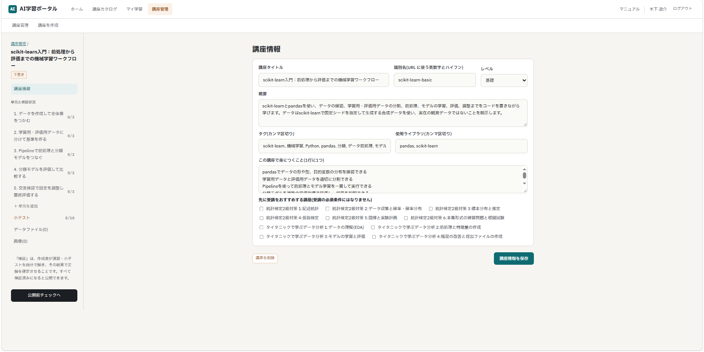
講座情報
講座タイトル・識別名・レベル・概要・タグ・使用ライブラリ・この講座で身につくこと・先に受講をおすすめする講座を編集し、 講座情報を保存 を押します。講座を削除 で講座を削除できます(受講記録もすべて削除され、元に戻せません)。
単元の編集
単元のタイトル・概要・学習目標・目安時間と、単元の中身(セル)を編集します。
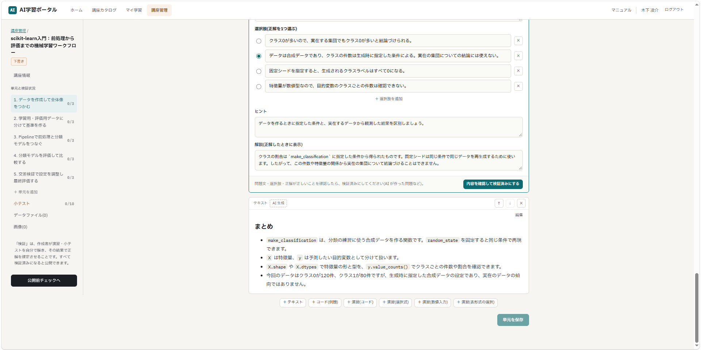
| 追加するセル | 内容 |
|---|---|
| ＋ テキスト | 説明の文章。Markdown で書きます(数式は $...$)。編集 / プレビュー で表示を確認できます。 |
| ＋ コード(例題) | 受講者が実行して試す例題のコード。例題を試しに実行 で動作を確認できます。 |
| ＋ 演習(コード) | コードを書く演習。問題文・初期コード・採点方式・作成者の解答などを設定します。 |
|
＋ 演習(選択式) ＋ 演習(数値入力) ＋ 演習(表形式の選択) |
選択肢・正解の数値と許容誤差・表の行と正解などを設定します。 |
- セルは ↑ ↓ で並べ替え、× で削除できます。
- 編集が終わったら 単元を保存 を押します。
- 受講者表示でプレビュー で、受講者に見える画面を確認できます(下書きの講座も、作成者と管理者はプレビューできます)。
- 単元の追加は左の ＋ 単元を追加、並べ替えは 前へ / 後へ、削除は 単元を削除 です。
- すべての単元に演習が1問以上必要です(演習の正解で単元の完了を判定するため)。
演習の検証
問題の形式によって、検証のしかたが異なります。検証の状態は「未検証」「検証済み」「不一致」のいずれかで表示されます。
コードの演習
- 作成者の解答欄に、受講者と同じ立場で問題を解いたコードを書きます(AI の模範解答は、先入観なく解けるよう最初は隠れています)。
- 解答を実行して検証 を押します(先に保存されます)。
-
結果が表示されます。
- AI の模範解答がある場合:その出力とあなたの解答の出力が一致すれば検証済み、違えば不一致です。
- AI の模範解答が無い場合:あなたの解答の出力が想定出力になり、検証済みになります。
- テストコードで採点する問題は、解答がテストに合格すれば検証済みです。
- 不一致のときは AI の模範解答を表示 で見比べます。自分の解答が正しければ 自分の解答を正とする で検証済みにします。問題文の条件があいまいな場合は、問題文を直して検証し直してください。
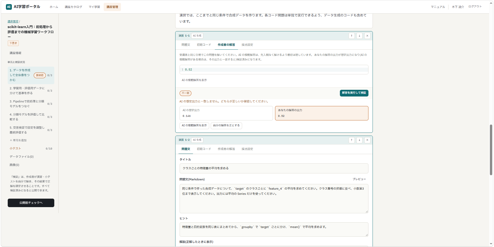
選択式・数値入力・表形式の選択
問題文・選択肢・正解が正しいことを確認し、内容を確認して検証済みにする を押します。 作成者が自分で正解を設定して保存した問題は、保存時に検証済みになります。
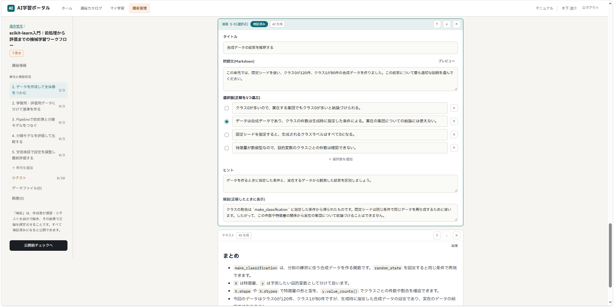
小テストの編集
講座の構成から 小テスト を選びます。＋ 選択式・＋ 数値入力・＋ 表形式の選択・＋ コード で問題を追加し、小テストを保存 を押します。問題ごとに関連単元を設定すると、受講者が不正解だったときに復習する単元として案内されます。 検証のしかたは演習と同じです。10 問程度を目安に、単元の内容に合った形式を選んでください。
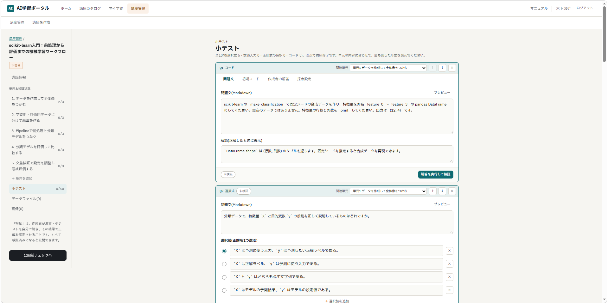
データファイル・画像
-
データファイル:ファイルをアップロード で講座で使うデータ(CSV など、1ファイル 20MB まで)を登録します。
受講者のブラウザの Python 実行環境に置かれ、コードから
pd.read_csv("ファイル名")のようにファイル名で読み込めます。 -
画像:画像をアップロード で図を登録します(PNG / JPEG / GIF / WebP、1枚 2MB まで。ファイル名は半角英数字と
._-だけ)。 説明・問題文・解説の Markdown にと書くと、その位置に表示されます。参照をコピー でこの書き方をコピーできます。
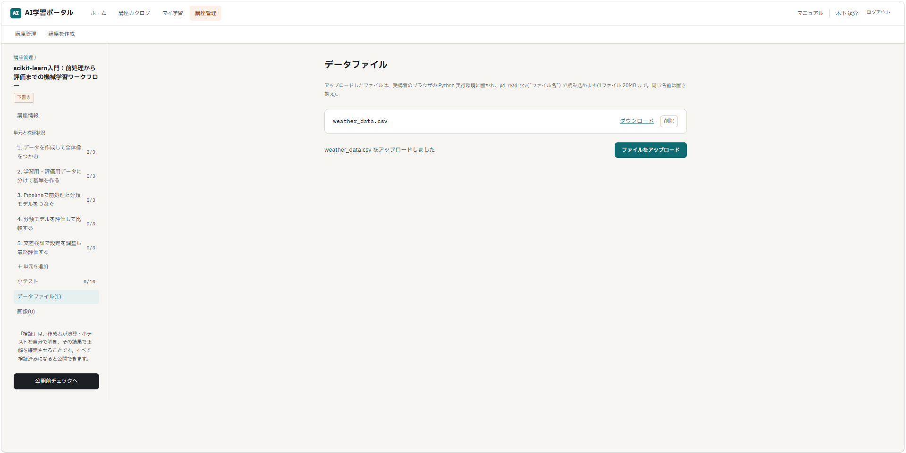
公開前チェックと公開
講座エディタの 公開前チェックへ、または講座管理の 公開前チェック で開きます。
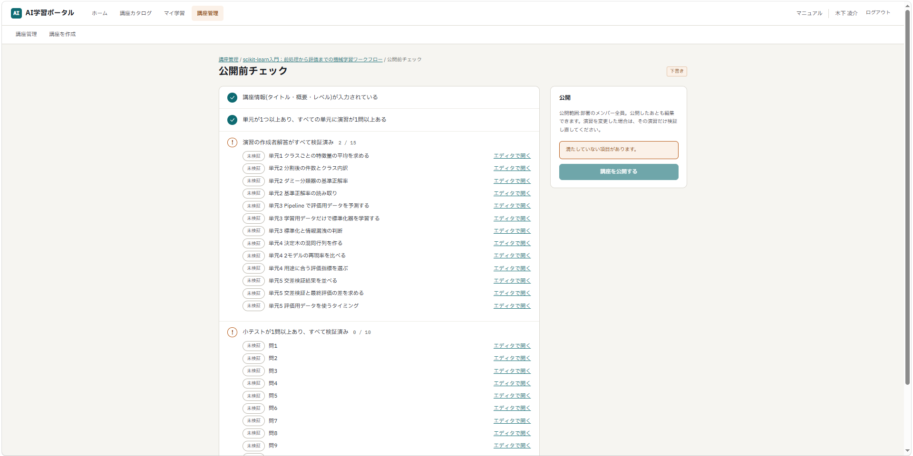
次の項目をすべて満たすと公開できます。満たしていない項目は エディタで開く から直せます。
- 講座情報(タイトル・概要・レベル)が入力されている
- 単元が1つ以上あり、すべての単元に演習が1問以上ある
- 演習の作成者解答がすべて検証済み
- 小テストが1問以上あり、すべて検証済み
- 例題コードがすべてブラウザ上でエラーなく実行できる(例題を実行してチェック を押して確認します)
- 例題を実行してチェック を押し、すべての例題がエラーなく実行できることを確認します。
- 受講者表示で確認 で、受講者に見える画面を最終確認します。
- 講座を公開する を押します。部署のメンバー全員の講座カタログに表示されます。
公開をやめるときは 下書きに戻す を押します。受講者からは見えなくなりますが、受講記録は残ります。
公開後の変更
- 公開した後も講座エディタで編集できます。保存した内容はすぐに受講者に反映されます。
- 演習・小テストの採点に関わる項目を変えた場合は、その問題だけ検証し直してください。
- すでに修了した受講者は、問題を変更しても修了のままです。
困ったときは
「データベースを起動しています」と表示された
しばらく使われていなかったため、データベースを停止していました。起動まで数分かかります。 そのままお待ちください(つながると自動で再読み込みします)。
コードの実行が始まらない・Python の状態が「読み込みに失敗しました」になる
初回は実行環境の準備に数十秒かかります。失敗と表示された場合は、ネットワークの状態を確認してからページを再読み込みしてください。
「name '...' is not defined」というエラーが出る
前のセルを実行していないため、変数がまだありません。単元の例題を上から順に実行してから、もう一度実行してください。
コードの実行が終わらない
実行ボタンの位置に表示される停止ボタンで止めてください。120 秒たつと自動で止まります。
演習の答えが合っているはずなのに正解にならない
「出力一致」の演習は、出力の内容(print の内容とセル最後の式の値)を比べます。余分な print を消す、問題文で指定された形式で表示する、などを確認してください。 ヒント も参考にしてください。
小テストを受けられない
講座のすべての単元を完了する必要があります。講座詳細で、まだ完了していない単元(チェックが付いていない単元)の演習に正解してください。
講座を公開できない
公開前チェックで「満たしていない」項目を確認し、エディタで開く から直してください。多くの場合、未検証の問題が残っています。
パスワードを忘れた、不具合を見つけた など各種相談事
木下(@r-kinoshita)に連絡お願いいたします。
用語集
| 用語 | 意味 |
|---|---|
| 講座 | 1つのテーマを学ぶ単位。複数の単元と小テストでできています。 |
| 単元 | 講座の中の1回分の学習。説明・例題・演習のセルが並んでいます。 |
| セル | 単元の中の1つのまとまり(説明のテキスト、例題のコード、演習)。 |
| 単元の完了 | 単元のすべての演習に正解した状態。 |
| 小テスト | 講座の最後のテスト。全単元を完了すると受験でき、満点で修了です。 |
| 修了 | 小テストで満点を取った状態。 |
| レベル | 講座の難易度。基礎・応用・実践の3段階です。 |
| 識別名 | 講座の URL に使う名前(英小文字・数字・ハイフン)。例:stats2-descriptive |
| 下書き / 公開中 | 講座の状態。下書きは作成者と管理者だけが見られ、公開中はメンバー全員の講座カタログに表示されます。 |
| 検証 | 作成者が問題を自分で解き、正解を確定させること。すべての問題が検証済みになると公開できます。 |
| 出力一致 / テストコード | コード問題の採点方法。出力が想定どおりか、またはテストコードに合格するかで採点します。 |
| 想定出力 | 出力一致で採点する問題の正しい出力。検証によって決まります。 |